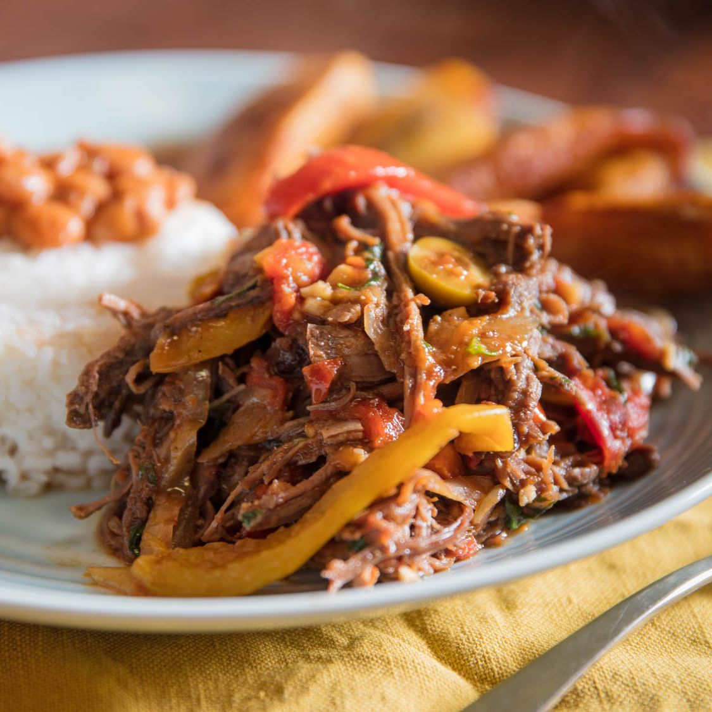

Ropa Vieja

Description
Even though it's name translates to "old clothes" in English, this is one of the most appetizing and flavorful dishes
Cuban cuisine. It gets it's name from texture of the slow cooked shredded beef which resembles, you guessed, old clothes
It consists of stewed beef that is shredded and served in a sauce made from tomatoes, onions, peppers,
and a vaierty of local spices.
It is often served alongside three other Cuban staples. Black beans, rice, and deep fried plantains.
Ingredients
- 1 tablespoon vegetable oil
- 2 pounds beef flank steak
- 1 cup beef broth
- 1 (8 ounce) can tomato sauce
- 1 (6 ounce) can tomato paste
- 1 green bell pepper, seeded and sliced into strips
- 1 small onion, sliced
- 2 cloves garlic, chopped
- 1 teaspoon ground cumin
- 1 teaspoon chopped fresh cilantro
- 1 tablespoon olive oil
- 1 tablespoon white vinegar
Steps
- Heat vegetable oil in a large skillet over medium-high heat. Add flank steak and cook until browned,
about 4 minutes per side.
- Transfer steak to a slow cooker; pour in beef broth and tomato sauce. Add tomato paste, bell pepper, onion,
garlic, cumin, cilantro, olive oil, and vinegar; stir until well blended. Cover and cook on on-Low for up to 10 hours,
or on High for 4 hours.
- Shred steak in the slow cooker with two forks.